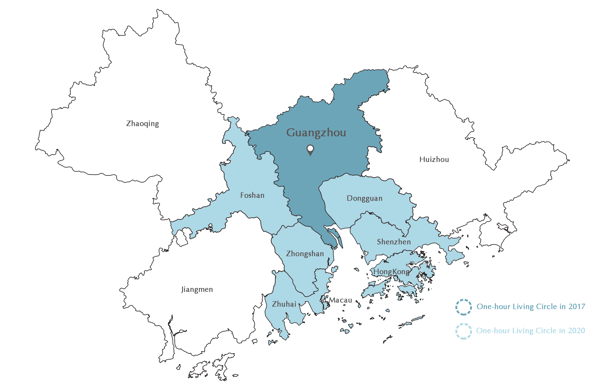
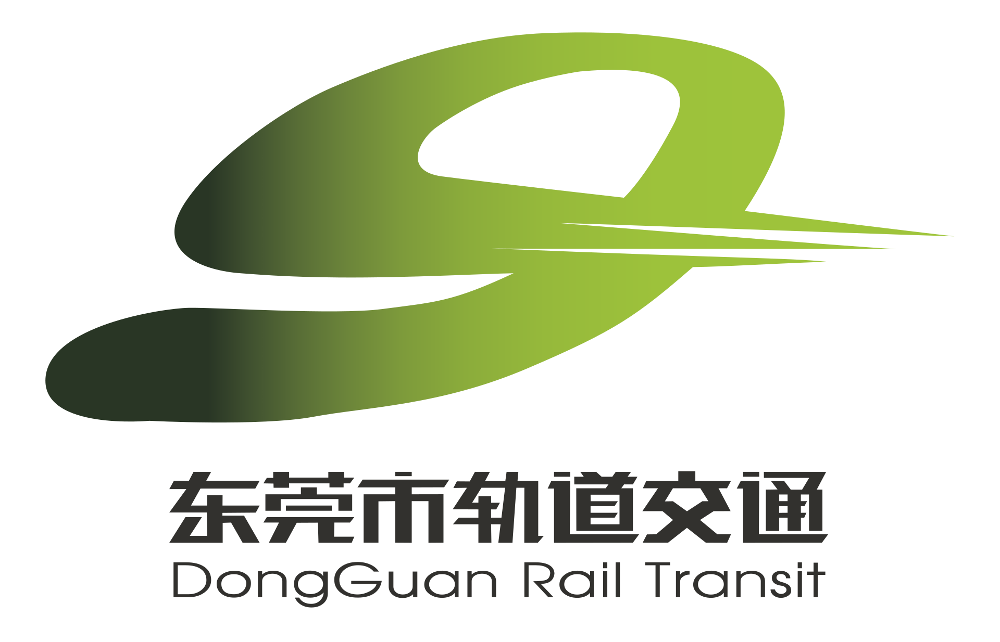
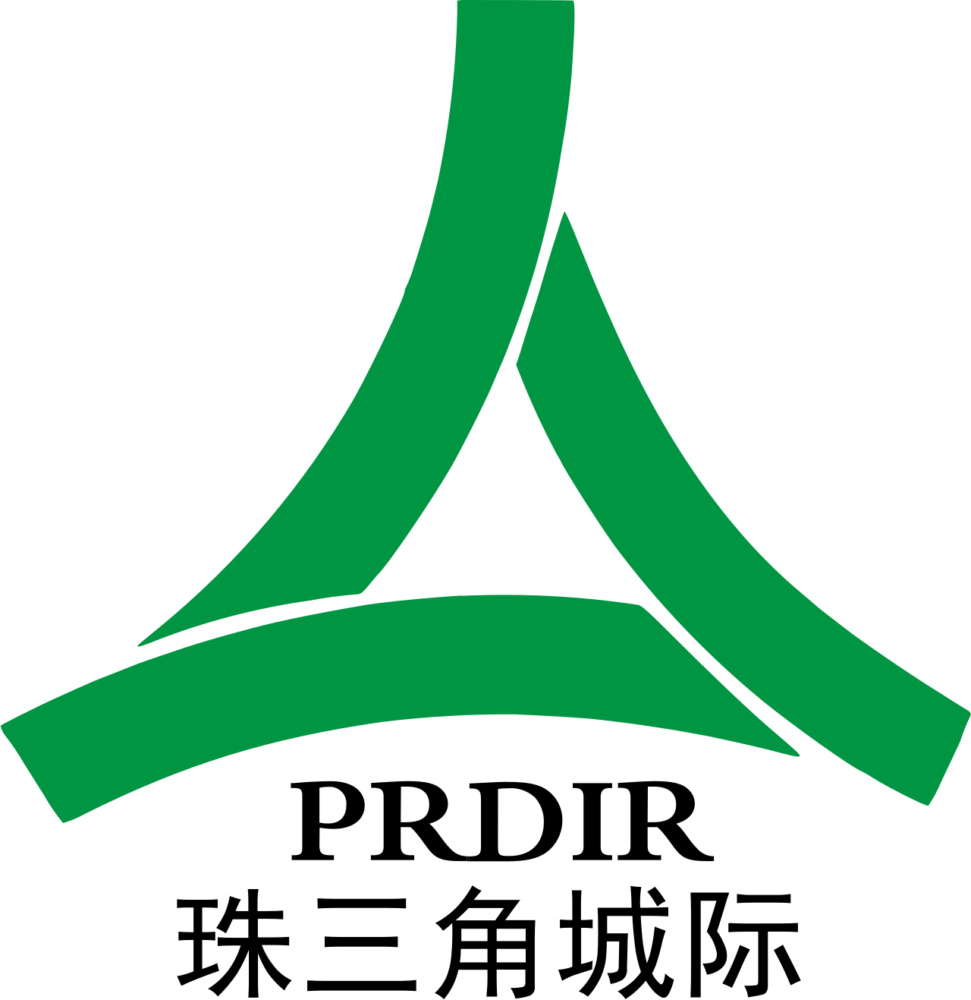

Hello, GBA!
Greater Bay Area is one of the most economically dynamic regions of China and the World, home to 86.7 million people.
read more
Story of the Lie De Village
Lie De is a typical southern Chinese village, which has been settled for over 900 years by its ancestor, Li Quan, during the Song Dynasty. The village was replaced by the CBD of Zhujiang New Town in the urban regeneration of Guangzhou around 2010.
Greater Bay Area
The Guangdong-Hong Kong-Macao Greater Bay Area is a cluster of cities surrounding the Pearl River Delta and the Lingding Ocean in the People's Republic of China, including nine neighbouring cities in Guangdong Province: the two first-tier cities and sub-provincial cities of Guangzhou and Shenzhen (Core cities) and the seven prefecture-level cities of Zhuhai, Foshan, Dongguan, Zhongshan, Jiangmen, Huizhou and Zhaoqing (Key node cities), as well as the two Special Administrative Regions of Hong Kong and Macau (Core cities), with a population of 70 million and 160,000 GDP per capita in 2018.
Population & GDP Growth
Growing populations and GDP per capita in GBA can materialize urban regeneration. The impact of urban regeneration on population and GDP is interrelated-population growth and increased career oppotunities drive economic growth in GBA, which in turn attracts more influx of people and investment. This virtuous circle can promote the development and enhance the competitiveness and influence of the city group.
Day and Night of GBA
Different from the daytime, the Greater Bay Area shows off its brilliant lights at night. The annual electricity consumption of 620 billion kilowatt hours makes the Greater Bay Area one of the brightest lit regions on the planet.
1975-2030
GBA Urbanization
In the 40 years since the Reform and Opening up, more than 70 million people have moved to the GBA, injecting dynamism into the region's economy and bringing about one of the largest and fastest urbanisation processes in human history.
Try Interactive map

One-hour Living Circle in 2017
One-hour Living Circle in 2020
1-Hour Living Circle
With Guangzhou as the centre, the service and technology industries have already started to spill over to Dongguan and Foshan, driven by policy promotion and rising office costs in Guangzhou and Shenzhen and urban integration. Improved transportation will help Jiangmen and Zhaoqing become important locations for logistics companies to locate in the Greater Bay Area and receive spillover demand. Huizhou, with its coastline resources, can attract tourist crowds from other cities in the Bay Area.
Greater Bay Area on Track
Rail transit provides a convenient and reliable mode of transportation and accessibility to job opportunities, educational institutions, and essential services. New transport corridors can act as catalysts for revitalising communities and attracting private investment, as well as facilitating the co-location of GBA cities and their gradual amalgamation into megacities.
CITY METRO
GUANGZHOU METRO
Established in 1992, The Guangzhou Metro has provided irreplaceable transportation services to the citizens in Guangzhou with a total rail of 857km.
more
SHENZHEN METRO
The Shenzhen Metro was established in 1998. While carring on the operation of 516.7 kilometers of rail, it is also keen on undertaking social responsibilities.
more
HONG KONG MTR
The MTR is the "backbone" of Hong Kong's transportation. The oldest East Rail Line was available in 1910, which has been in operation for 113 years.
more
FOSHAN METRO
The Foshan Metro is currently operated by Guangzhou Metro and has a total mileage of 124.49 kilometres.
more

DONGGUAN RAIL TRANSIT
The first line of Dongguan Rail Transit started in 2016. The current operating mileage is 37.8 km.
more
Macao LRT System
The Taipa Line of the Macau Light Rail Transit (LRT) was opened to traffic in 2019, the only line operating at present.
more
RAIL SYSTEM
China Railway High-speed (CRH)
China's high-speed railways (CRH) are currently an important category of transport infrastructure in China and the longest built length and highest usage railway system in the world, designed for speeds of 200-350 km/h. As of June 2022, China has nearly 3,200 kilometres of high-speed railways operating at the high standard of 350 km/h on a regular basis, and by the end of 2022, the country's high-speed railways have operated for approximately 42,000 kilometres.
more

Pearl River Delta Metropolitan Region Intercity Railway System
The Pearl River Delta Intercity Rail Transit (PRDIR) is a rapid transit railway system planned, designed, constructed and operated for the urban agglomeration in the Greater Bay Area, operating at a speed of approximately 200km/h. When completed, the system will ensure that the fastest time required for cities in the Greater Bay Area to reach any of the surrounding cities with trains can be kept within 60 minutes.
more
100 YEARS of
GBA Rail Transit
From the Canton-Kowloon Railway in 1911 during the Hong Kong colonial era, to the Guangzhou-Shenzhen railway, the first high-speed railway after the Republic's Reform and Open-up, to the Guangzhou-Shenzhen-Hong Kong Express Rail Link in 2018, which can travel from Guangzhou to Shenzhen in just 48 minutes at 350 km/h, you have a lot to explore.
Try Interactive map
EPILOGUE
From Guangzhou, the eastern starting point of the Maritime Silk Road and a thousand-year merchant capital, to Hong Kong, one of the world's top financial centres and the Pearl of the Orient, to Shenzhen, which has grown from a small fishing village to a world centre of technology in 40 years, the story of the Guangdong-Hong Kong-Macao Greater Bay Area is just beginning.
A key aspect of urban regeneration is an efficient and sustainable transport system that supports revitalisation efforts. Looking at the historical landscape of ‘the Great Bay Area on the Track', we see that the rail system supports the mobility of residents, the connectivity and interaction between cities, and the regeneration of the entire region of the GBA.
JIN JIANG
Co-Producer

JinJiang22
jiangjin9909@gmail.com